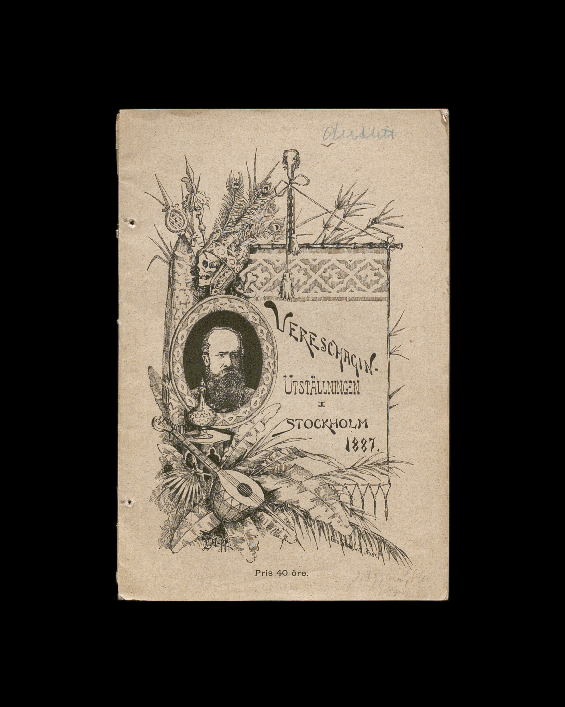

SAK Svenska Allmänna Konstförening
Vårt gemensamma intresse för att digitalisera äldre konstkataloger förde oss samman i detta projekt,
som genomfördes inom ramen för kursen Digitalisering för bevarande och tillgänglighet i masterprogrammet i biblioteks- och informationsvetenskap, Högskola i Borås.
Projektet har utförts i samarbete med SAK (Sveriges Allmänna Konstförening), landets största konstförening,
som verkar för samtidskonsten i Sverige och grundades redan 1832 i Stockholm.
De fysiska kataloger som vi har valt att digitalisera förvaras vid Stadsarkivet i Liljeholmskajen.
Vi har besökt arkivet vid två tillfällen: först för att bedöma katalogernas fysiska egenskaper och göra ett initialt urval,
och därefter för att fördjupa urvalet och identifiera de kataloger som bäst representerar utvecklingen i deras design och formgivning.
Author:
Carmen Gogan, Daniel, Miranda Rönngrenn, Zoe Bauer